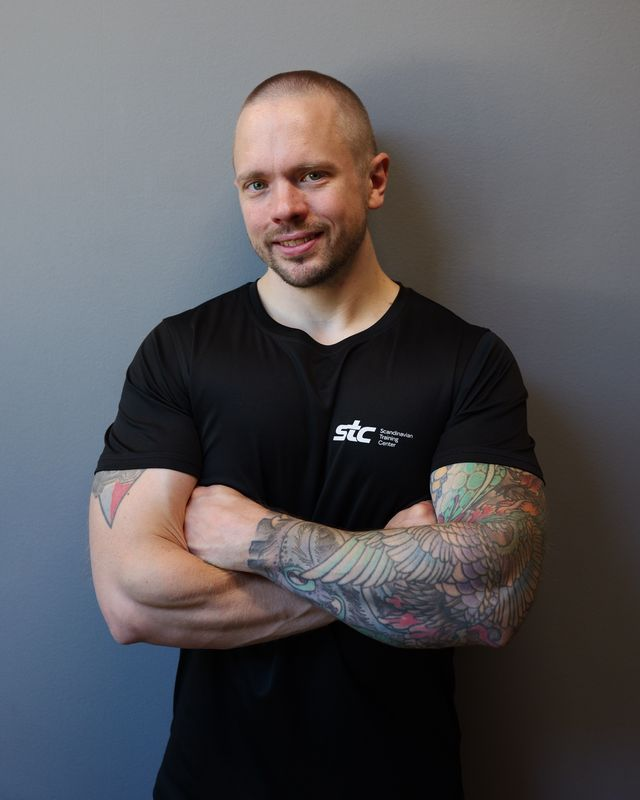

Flera personer live på samma skärm
Upp till en hel grupp på gymmets TV samtidigt. Varje kurva är en muskel och en sida.
Trådlösa EMG-sensorer mäter muskelaktiviteten under träningen, och ett vanligt pulsband visar pulsen bredvid. Du ser den live på telefonen och skärmen i gymmet, och efter passet ser du skillnaden mellan sidorna och vilken övning som träffade bäst.
Under utveckling. En prototyp att visa upp finns tillgänglig mycket snart.
EMG har länge funnits i forskningslabb och hos elitlag. FAB EMG tar mätningen till en vanlig träningssession, där tränaren och klienten står bredvid varandra.
Upp till en hel grupp på gymmets TV samtidigt. Varje kurva är en muskel och en sida.
Välj övning, starta setet och se siffrorna i telefonen. Inga datorer eller sladdar på golvet.
Sammanfattning direkt efter passet, veckorapport och ett träningsförslag byggt på klientens egna mätningar.
EMG visar vilken muskel som arbetar. Pulsen visar hur hårt kroppen jobbar totalt. Tillsammans ser du om det var muskeln eller flåset som tog slut, och vilan kan styras av när pulsen har gått ner.
Allt sparas lokalt, fungerar utan internet och kräver klientens samtycke. Svenskt, med support på plats.
| Labbsystem | EMG-kläder | Pulssystem för gym | FAB | |
|---|---|---|---|---|
| Byggt för | Forskning och klinik | Enskilda idrottare | Gruppass och kondition | PT-pass och grupper på gym |
| Vem styr | Expert vid en dator | Personen själv i en app | Instruktören | Tränaren i mobilen |
| Flera samtidigt | Ibland, med en tekniker | Nej, en person per plagg | Ja, puls för alla | Ja, jämför set för set på TV:n |
| Muskler | Valfria | Bara de som plagget täcker | Nej, bara puls | Valfria, sensorer på huden |
| Puls | Separat utrustning | Varierar | Ja | Ja, med vanliga pulsband, bredvid musklerna |
| Var datan finns | På datorn | I tillverkarens moln | Ofta i ett moln | På gymmet, med samtycke |
Sensorerna sätts på musklerna du vill följa, till exempel vänster och höger bröst. Sätt på pulsbandet om du vill ha pulsen med. Allt ansluter trådlöst till FAB Hub.
Skanna QR-koden, välj övning och starta. Telefonen styr passet, för dig själv eller för en grupp.
Kurvor, reps, sidobalans och puls visas i realtid. Varje set sparas i historiken.
En kurva per sensor, på telefonen och skärmen samtidigt.
Reps och tempo räknas ur aktiveringskurvan, utan knapptryck.
Skillnaden mellan vänster och höger, per muskel och över tid.
En kort kalibrering gör att pass kan jämföras även när sensorn flyttats.
Utveckling per övning och en sammanfattning av veckans pass.
Förslag baserade på vad mätningarna visar och vilka övningar som fungerat bäst.
En kort text efter varje pass och vecka. Ett frivilligt tillval.
Polar, Garmin, Wahoo och liknande band kopplas trådlöst. Puls, zon och procent av maxpuls visas live, i egen färg så den aldrig blandas ihop med muskeldatan.
Allt körs på FAB Hub i lokalen, så träningen fungerar även med dåligt nät.
Koppla ett vanligt pulsband till FAB Hub. Pulsen visas live på telefonen och på gymmets skärm, alltid i orange med ett hjärta, så den aldrig blandas ihop med muskeldatan.
Fungerar med de flesta Bluetooth-pulsband, till exempel Polar H10, Garmin HRM och Wahoo TICKR. Bandet kopplas till personen en gång. Maxpulsen uppskattas från åldern eller anges från ett eget test.
Puls, zon och procent av maxpuls live. På skärmen får varje person en ruta i sin zons färg, så instruktören ser direkt vem som ligger rätt.
Musklerna i en grön panel, pulsen i en orange under, på samma tidslinje. Nästa set föreslås när pulsen har gått ner, och per set ser du hur mycket pulsen steg och hur snabbt den sjönk.
Snitt- och maxpuls, tid i varje zon och hur mycket pulsen sjunker första minuten. Samma pass med lägre puls över tid visar att formen blir bättre.
Muskelaktivitet och puls är personlig information. Den som tränar bestämmer över sin egen data.
FAB EMG är ett träningsverktyg som visar muskelaktivitet. Det är inte medicinsk utrustning och ställer inga diagnoser.
FAB EMG är mitt eget projekt som jag utvecklar vid sidan av mitt arbete som PT på STC Ystad. Är du ett gym, en tränare eller tränar du själv och vill veta mer när FAB öppnar för fler? Skicka en intresseanmälan, så hör jag av mig när det är dags.
Sensorer, hub och app testas på riktiga träningspass och förbättras löpande.
En demo på plats, ungefär 15 minuter, där du får ha sensorerna på dig själv.
De som har anmält intresse får höra först om upplägg och pris.
EMG (elektromyografi) mäter de elektriska signalerna som musklerna skickar när de drar ihop sig. Ju hårdare muskeln arbetar, desto starkare signal. Sensorerna sitter på huden och känns knappt.
En TV med HDMI. FAB Hub, sensorerna och mjukvaran ingår, installerat och testat. Tränarna använder sina egna telefoner. Pulsband kan vara gymmets eller medlemmarnas egna.
EMG visar vilken muskel som arbetar och hur mycket. Pulsen visar hur hårt hela kroppen jobbar. Tillsammans syns det om ett set tog slut för att muskeln var trött eller för att flåset tog slut, och vilan kan anpassas efter det.
De flesta pulsband som skickar puls via Bluetooth fungerar, till exempel Polar H10, Garmin HRM och Wahoo TICKR. Bandet kopplas till personen en gång och känns sedan igen. Maxpulsen uppskattas från åldern eller anges från ett eget test.
Nej. Allt körs lokalt på FAB Hub. Internet används bara för uppdateringar och för AI-sammanfattningar om ni valt dem.
Sensorerna sätts på och kopplas till rätt muskel på någon minut. Därefter startar tränaren setet från mobilen.
Ja. En kort maxkalibrering per muskel gör att aktiveringen visas i procent av personens egen maxkraft, så pass går att jämföra även om sensorn sitter lite annorlunda.
Den sparas på hubben i lokalen. Inget spelas in utan kundens samtycke, och kunden kan själv ladda ner eller radera sin data.
Det är inte bestämt än. FAB EMG är under utveckling, och upplägg och pris tas fram innan det öppnar för fler. Skicka gärna en intresseanmälan så hör jag av mig.

Jag heter Fabian Olsson och arbetar som personlig tränare och grupptränare på STC Ystad. Jag är också löpcoach på Runacademy och har arbetat som utvecklare sedan 2020. FAB är mitt eget projekt som jag bygger på fritiden.
I mitt arbete som PT får jag ofta samma frågor: arbetar muskeln jag vill träffa, och tar båda sidorna lika mycket? Känslan säger mycket men inte allt. Med FAB EMG vill jag kunna visa det klienten känner, set för set, och planera träningen efter mätningar.
På fritiden tränar jag gärna bänkpress, och 2026 genomförde jag en svensk klassiker. Fler är planerade.
FAB EMG är under utveckling, och en prototyp att visa upp finns tillgänglig mycket snart. Hör av dig redan nu, så bokar vi en demo på plats så fort den är klar. Den tar ungefär 15 minuter och du får ha sensorerna på dig själv. Berätta gärna om du hör av dig som gym, PT eller som någon som tränar på egen hand.
hej@fab.fitness